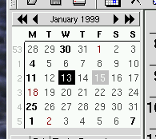
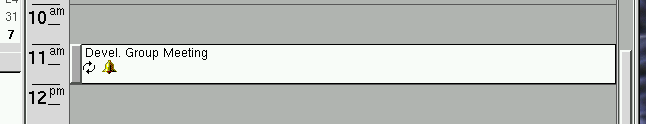

Next Previous Table of Contents
When KOrganizer starts, you are first presented with the main KOrganizer window. The window has several components, including a menubar, a toolbar, a month calendar, a current ``view'' of events, and a tasklist. The calendar defaults to displaying today's date.
The menus provide access to all the common operations that can be performed on the calendar, including saving, loading, adding and deleting appointments, printing, etc. etc.
The File menu provides access to functions involving the
entire calendar.
Allows you to open up another main window. You might want to do this if you wish to have two simultaneous but different views of a calendar open at once.
Opens a file dialog allowing you to select a new vCalendar to load. If you have made changes to the current calendar, you will be given the option of saving them before loading a new one.
Provides a list of recently opened calendars for quick access, allowing you to bypass the file dialog entirely.
Closes the current window. If this is the last window, this choice has the same effect as Quit.
Saves the calendar to disk, making sure all changes you
might have made will be kept. If the calendar has no name, save will
behave like Save As.
Gives you a file dialog so that you may choose a different name for your calendar than the one currently assigned to it. Useful if you have made changes to a calendar that you want to save, but also want to keep separate from your ``regular'' calendar.
If you have used ical, a popular but older
calendar program for unix using the Tk widget set, you may wish to
import your appointments, events, and todo items directly to
KOrganizer. This action will read the .calendar file from
your home directory and merge any entries it contains into your
current calendar. If any errors or suspicious things occur during the
process, you will be notified via a message box.
If you have a different vCalendar file somewhere, and you would like to include its contents into your own calendar, this will do just that. A good time to do this would be if you received a vCalendar with a few entries via e-mail, for instance.
Brings up the print setup dialog and allows you to set up how you want printed output to appear. See the section on printing for more information.
Prints the current calendar.
Prints the current calendar and displays it with your print preview program, instead of sending the output directly to the printer. You can choose the program that you use to preview output in the Options dialog.
Quits KOrganizer, prompting to save if the current calendar has been modified but not yet saved.
The Edit menu provides editing operations on appointments.
Cuts the currently selected appointment(s) to the clipboard, removing them from your calendar.
Copies the currently selected appointment(s) to the clipboard, leaving them untouched in your calendar.
Inserts the contents of the clipboard into your calendar. The clipboard must contain a valid vCalendar, provided either by a previous Cut/Copy operation or from a selection made outside of KOrganizer. You will be warned if the contents of the clipboard cannot be understood.
Options for changing the current view of your appointments
Switches to List View.
Switches to Day View.
Switches to sec-weekview name="Week View">, but with only the 5 days of a business week selected instead of the normal 7.
Switches to Week View.
Switches to Month View.
Switches to full screen Todo View.
Updates or refreshes the currently displayed view.
Different actions you can take to modify your calendar.
Brings up the appointment window, allowing you to create a new appointment. By default, the appointment will begin on the currently selected date.
Brings up the appointment window, allowing you to create a new appointment. The default for this mode is that the appointment has no time associated with it; it is merely a reminder of something you mean to do on that particular date or range of dates.
Brings up the appointment window with the currently selected appointment filled in to the fields and ready for editing.
Confirms that you would like to delete the currently selected appointment, and upon positive confirmation, removes it from your calendar.
Pops up the Search Window, allowing you to search for appointment(s) by date, a common phrase, etc.
This is currently unimplemented.
Allows access to configuration options common to the entire program.
Toggles whether or not the tool bar is visible.
Toggles whether or not the status bar (at the bottom of the screen) is visible.
Brings up the Options Dialog, allowing you to change common options like date/time formats, fonts, etc.
Various methods of getting help on KOrganizer.
The contents of the KOrganizer online help manual.
Gives you context sensitive help information on the object that you click on after choosing this. However, none of the help for the different objects has been written as of the time this manual was last updated, so this will not be too useful. Volunteers?
Shameless plug about the authors of KOrganizer.

The small calendar that is in the upper-left corner of the screen
is the main way provided to navigate among and select from various
dates. The single-arrow icons move forwards and backwards in time by
increments of a month, while the double-arrows allow moving by years
at a time. Today's date will be outlined with a gray box. Dates
which have appointments scheduled on them will be bold and a different
color than the regular dates. Selecting a date is accomplished simply
by clicking on it; multiple dates may be selected/deselected simply by
holding down the control key while clicking.
There are several different ``views'' available for displaying your list of events and appointments, including a ``list'' view, a ``day'' view, a ``week'' view, and a ``month'' view. KOrganizer is smart enough to remember in between sessions what the last active view was, and the next time it is started, it will default to that view.
In general, each view will provide a way of displaying your events
and appointments constrained to a particular time period or style of
display. clicking on any appointment will select it for further
action. Right clicking an appointment brings up a menu with options
such as edit, delete, and so on. You can also use
the Action menu to perform similar operations.
This view allows you to see all your appointments for the day in list-type arrangement. Appointments are displayed one per line. The first column of the appointment will have a bell icon displayed in it if an alarm is set for the appointment. The second column will display a chasing-arrows icon if the appointment repeats multiple times. Holding the mouse over the arrows icon will bring up a tooltip with more detailed recurrence information. The third column displays start and end time information, and the fourth column gives a summary of the appointment.
The list view is good for displaying many appointments on a single day in a compact fashion. It is also useful if your appointments are spread out over a long time period that would not normally fit entirely on the screen when using one of the other views.
This view presents your appointment information in a chronological fashion which also provides visual feedback on the length of each appointment. Time is indicated on the left side of the view. A scrollbar on the right is provided when the entire day cannot fit onto the screen at one time (which is the usual case). Each rectangle in the view represents an individual appointment, and displays the appointment's start and end time, summary, and whether or not the appointment repeats or has any alarms set.

A useful shortcut that this view provides for adding appointments is the ability to double-click on any open region of time, which will automatically create a one hour long appointment and let you start editing the description. The appointment's ``snap'' to half-hour increments, rounding off to the closest half hour from where you clicked.
The week view provides a view very similar to the day view for displaying seven days worth of appointments next to each other. All of the functions available for the day view are available in the week view. See the Day View section for further information.
The month view displays all the appointments for the current month in a familar calendar layout. Each day displays all of the appoints that can fit in the area provided (maximizing the window will enable you to see more appointments). Information on repeating and alarm status is indicated through icons.
Navigation inside the month view is provided by a set of buttons along the right side of the screen. By pressing the appropriate upwards-facing button, you can navigate by week, month, or even year. The downwards-facing buttons perform the analogous function, except forwards in time versus backwards.
The todo list is unfortunately in a state of flux, so what is described here (as far as ``operation'' of the todo list goes) may change in the near future.
The todolist provides a place for you to jot down quick (or long-term) notes to yourself about things that you need to do. Currently, you cannot associate a date due with a todo entry, but this is forthcoming. You can however assign priorities to todos, and they will appear sorted in order of priority. The lower the number, the higher the priority, except that zero (0) is defined as ``no priority.''
To make a new todo entry, right click in the todo box. You will
get a menu with the option to create a new entry. If you clicked on
an already existing todo, you will also see a choice to delete that
entry if you wish. When you choose New Todo, a new todo will
be created and you will be prompted to enter a short description.
After doing this, you can change the priority by double-clicking in
the second column of the todo, which will bring up a list of possible
priorities. simply click on one to choose it. Similarly, if you
double-click in the description (third) column of an existing todo,
you will be able to edit the description. Double clicking on the box
(first column) will toggle the todo's ``completed'' status.
You may also pick Purge Completed from the right mouse
button menu to delete all todo entries that you have marked completed.
This is handy for quick cleanup.
As has already been mentioned, the todo list could be a lot friendlier and fancier, and we plan for it to be so. If you have any suggestions for what you would like to see in the todo list, please e-mail the authors.
Next Previous Table of Contents